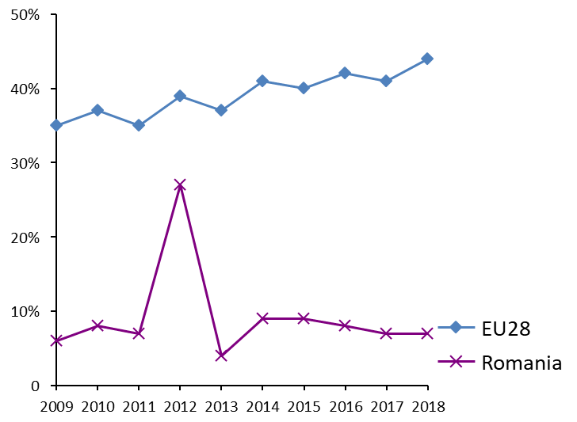
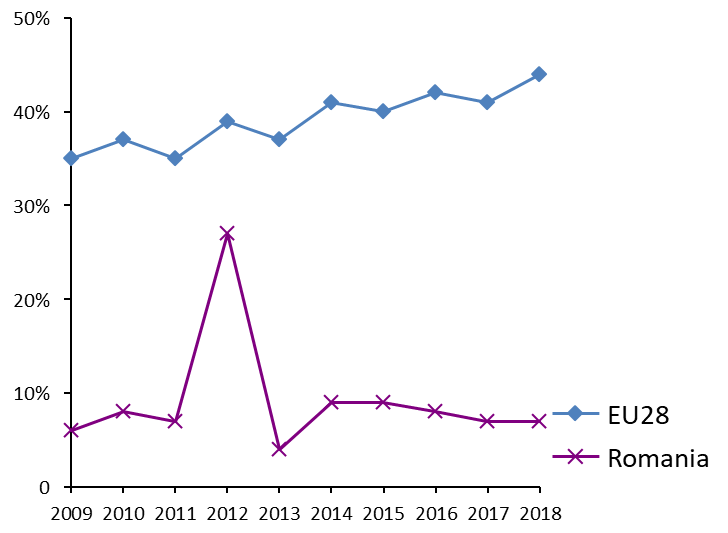
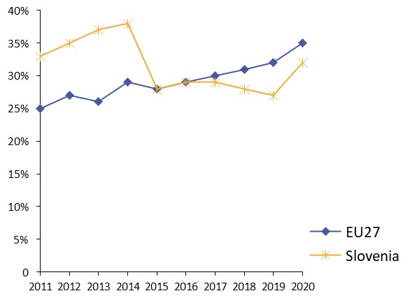
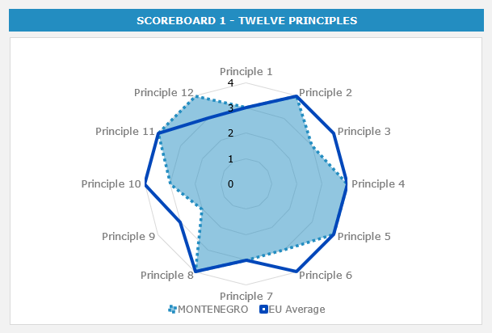
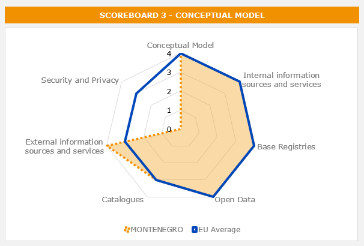
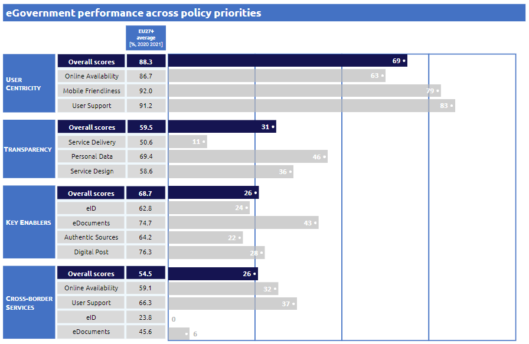
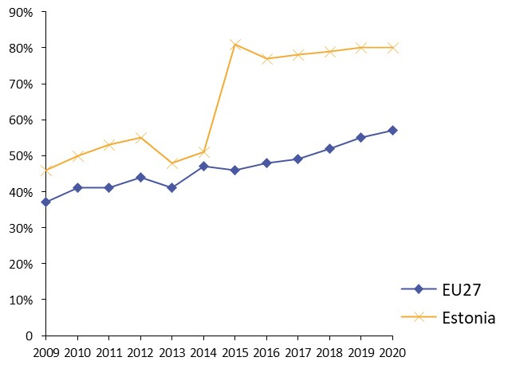
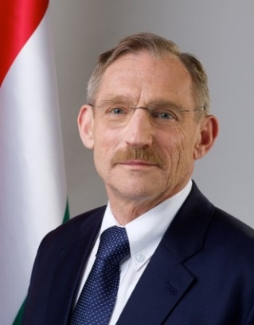

-
 
Table of Contents


Digital Public Administration factsheet 2022
Montenegro
ISA2
1 Country Profile 4
2 Digital Public Administration Highlights 10
3 Digital Public Administration Political Communications 12
4 Digital Public Administration Legislation 20
5 Digital Public Administration Governance 27
6 Digital Public Administration Infrastructure 35
7 Cross-border Digital Public Administration Services 46
 Country
Profile
1
Country Profile
Digital Public Administration Indicators
The following graphs present data for the latest Digital Public Administration Indicators for Montenegro compared to the EU average. Statistical indicators in this section reflect those of Eurostat at the time the Edition is being prepared.
Interoperability State of Play
In 2017, the European Commission published the European Interoperability Framework (EIF) to give specific guidance on how to set up interoperable digital public services through a set of 47 recommendations. The picture below represents the three pillars of the EIF around which the EIF Monitoring Mechanism was built to evaluate the level of implementation of the EIF within the Member States. It is based on a set of 71 Key Performance Indicators (KPIs) clustered within the three main pillars of the EIF (Principles, Layers and Conceptual model), outlined below.

Source: European Interoperability Framework Monitoring Mechanism 2021
For each of the three pillars, a different scoreboard was created to breakdown the results into their main thematic areas (i.e. the 12 principles of interoperability, the interoperability layers and the components of the conceptual model). The thematic areas are evaluated on a scale from one to four, where one means a lower level of implementation and 4 means a higher level of implementation. The graphs below show the result of the third EIF Monitoring Mechanism data collection exercise for Montenegro in 2021.
Source: European Interoperability Framework Monitoring Mechanism 2021
Montenegro’s results in Scoreboard 1 show an overall good implementation of the EIF Principles, scoring above the European average for Principle 12 (Assessment of Effectiveness and Efficiency). Areas of improvements are mainly concentrated in the Principles 3 (Transparency), 6 (User-centricity), 9 (Multilingualism) and 10 (Administrative simplification) for which the scores of 2 and 3 show a medium performance in the implementation of corresponding recommendations. Particularly, the low degree of internal visibility and provision of external interfaces for European public services (Principle 3 – Recommendation 5) and the lack of multiple channels providing public services to ensure that users can select the channel that best suits their needs and of a single point of contact to facilitate users’ access to public services (Principle 6 – Recommendations 10 and 11) could be improved to enhance Montenegro’s implementation of the recommendations of Scoreboard 1.

Source: European Interoperability Framework Monitoring Mechanism 2021
The Montenegrin results for the implementation of interoperability layers assessed for Scoreboard 2 shows an overall good performance with all layers receiving a score of 4, except for Interoperability governance, which was not assessed due to a lack of data.
Source: European Interoperability Framework Monitoring Mechanism 2021
Montenegro’s scores assessing the Conceptual Model in Scoreboard 3 show a good performance in the implementation of recommendations associated with the conceptual model, internal and external information sources and services, base registries, open data and catalogues, despite the lack of data for security and privacy. Montenegro scored above the European average in the implementation of Recommendation 45 on the use of external information sources and services to develop public services.
Additional information on Montenegro’s results on the EIF Monitoring Mechanism is available online through interactive dashboards.
eGovernment State of Play
The graph below presents the main highlights of the latest eGovernment Benchmark Report, an assessment of eGovernment services in 36 countries: the 27 European Union Member States, as well as Iceland, Norway, Montenegro, the Republic of Serbia, Switzerland, Turkey, Albania and Macedonia (referred to as the EU27+).
The study evaluates online public services on four dimensions:
- User centricity: indicates the extent to which a service is provided online, its mobile friendliness and its usability (in terms of available online support and feedback mechanisms).
- Transparency: indicates the extent to which governments are transparent about (i) the process of service delivery, (ii) policy making and digital service design processes and (iii) the personal data processed in public services.
- Cross-border services: indicates the extent to which users of public services from another European country can use the online services.
- Key enablers: indicates the extent to which technical and organizational pre-conditions for eGovernment service provision are in place, such as electronic identification and authentic sources.
The 2022 report presents the biennial results, achieved over the past two years of measurement of all nine life events used to measure the above-mentioned key dimensions. More specifically, these life events are divided between seven ‘Citizen life events’ (Starting a small claim procedure, Moving, Owning a car, Health measured in 2021, and Career, Studying, Family life, measured in 2020) and two ‘Business life events’ (Regular Business Operations, measured in 2021, and Business start-up, measured in 2020).
Source: eGovernment Benchmark Report 2022 Country Factsheets
Digital Public Administration Highlights
2
Digital Public Administration Highlights
| Digital Public Administration Political Communications |
The Government of Montenegro has adopted the Digital Transformation Strategy in December 2021. Strategy represents a development framework that defines the preconditions and initiatives needed for rapid adaptation to the increasingly complex digital environment, and agile and proactive development of digital Montenegro.
Montenegro's digital transformation strategy is a key component of meeting digital ambitions, as well as a means to improve public services and user experience, strengthen digital skills of society as a whole, reduce the digital divide, but also enable digital transformation and effectively manage it throughout the country.
| Digital Public Administration Legislation |
The Law on Electronic Administration (Official Gazette of Montenegro, No. 72/19) was adopted at the beginning of January 2020. One of the main purposes of the law is to further regulate the field of eGovernment in Montenegro in accordance with its current and future needs and international integration processes.
| Digital Public Administration Governance |
The formation of the digital transformation process management system, which primarily implies the establishment of a National coordination body at the social level in order to improve the digital transformation process of Montenegro will be realized through activities identified in the Digital Transformation Strategy of Montenegro 2022-2026 in this year.
 | Digital Public Administration Infrastructure |
The Unified Information System for Electronic Data Exchange (JISERP) between state bodies, state administration bodies and other entities recognized by the Law on Electronic Administration is a significant shared system established by the Ministry of Public Administration. Through the Unified Information System for Electronic Data Exchange, institutions actively exchange data.

Digital Public Administration Political Communications
3
Digital Public Administration Political Communications
Specific political communications on digital public administration
Digital Transformation Strategy of Montenegro 2022–2026
The government of Montenegro recognises digitalisation as one of the priorities for the development of the Montenegrin society, taking into consideration the processes that can effectively influence and improve the quality and standard of living of Montenegrin citizens.
The government of Montenegro adopted the Digital Transformation Strategy of Montenegro in December 2021. The strategy represents a development framework defining the preconditions and initiatives needed for rapid adaptation to the increasingly complex digital environment, as well as agile and proactive development of digital Montenegro. It applies to all parts of the Montenegrin society - State administration, local government and the wider public sector, the economy, academia, the scientific community, non-governmental organisations (NGOs) and civil society. Challenges in the digital transformation of Montenegro are addressed through two strategic goals that reflect the digital reality. The first focuses on improving the capacity and ability for digital transformation, while the second on strengthening the digital awareness of the Montenegrin society and the digital competitiveness of the information and communication technology (ICT) sector. In order to achieve the desired progress, the two strategic objectives are then channelled into seven operational goals through priority areas or groups of activities.
Montenegro’s Digital Transformation Strategy is a key component to meet ambitions in the digital field, as well as a means to improve public services and user experience, strengthen the digital skills of the society as a whole, reduce the digital divide, enable the digital transformation and effectively manage it throughout the country.
The Digital Transformation Strategy is in line with the goals of the new Public Administration Reform Strategy 2022–2026 in the area of eGovernment. Namely, both strategies deal with comprehensive digitalisation in the provision of public administration services and will address the issues of development of interoperability and identification of all relevant stakeholders in ICT and business, as well as their cooperation in the delivery of eServices.
Public Administration Reform Strategy 2022–2026
The government of Montenegro adopted the Public Administration Reform Strategy 2022–2026 in December 2021. Knowing that a high-quality public administration depends on responsible and competent civil servants, the strategy is focused on empowering public administration employees through the development of the necessary competencies and skills, but also standardisation of the civil service system in public administration. Reform activities concentrate on (i) greater availability of information to make life easier for citizens, especially through the creation of digitalised services and interoperable registers; (ii) use of technology through teleworking; (iii) diversity and involvement of all stakeholders in public administration; and (iv) affirmation of needs expressed by citizens through participation in public consultations, but also direct influence on the operation of bodies with a view to developing their policies based on the identified needs of citizens and the economy in direct communication and cooperation.
The core values on which public administration reform is based include trust, equality, impartiality, transparency, professionalism, participation and partnership, evidence‑based decision-making, and responsible and efficient leadership and management.
Public administration reform is one of the key policies in Montenegro’s European Union (EU) membership negotiation process and the document was therefore prepared in accordance with all international standards, including both general and specific objectives, activities and cost estimates for its implementation. By adopting the Public Administration Reform Strategy 2022–2026, Montenegro met a significant obligation, thus creating the preconditions to apply to the EU partners for strong financial support for the implementation of public administration reform, worth over EUR 20 million.
Smart Specialisation Strategy
The Smart Specialisation Strategy (3S) 2019–2024 of Montenegro follows three key strategic directions:
- Healthier Montenegro;
- Sustainable Montenegro; and
- Modernised and digitised Montenegro.
The latter should enable reaching the standards of the EU that are related to the 2020 Digital Agenda, the Single Digital Market Strategy and the new EU Industrial Policy Strategy. The development and application of ICT is of utmost importance for economic development. Reaching the standards and achieving the goals will lead to trade development, better use of capital and a stronger national competitiveness. Also, the introduction of modern technologies and the utilisation of available raw materials in priority sectors will result in the placement of high-quality products on the market. The foundations of this direction are related to better infrastructure, eEconomy and information security, but the achievement of this goal is also directly connected with all the priorities defined by the Smart Specialisation Strategy. This is why ICT has been defined as a horizontal sector providing information and technology support to selected priorities.
In accordance with the suggestions of the European Commission during the approval of the Smart Specialisation Strategy of Montenegro, the government of Montenegro adopted in December 2021 the Operational Programme (OP) for the implementation of the Smart Specialisation Strategy 2021–2024 and the Action Plan 2021–2022. The OP sets a number of clearly articulated operational goals, which contribute to the realisation of the strategic goals of the Smart Specialisation Strategy 2019–2024 in a more concrete way.
Innovation Programme
Recognizing the importance of innovation in the economic development of the country and in strengthening competitiveness, the government of Montenegro and the Ministry of Science and Technological Development are constantly working to improve and stimulate innovation through legal and strategic frameworks. Therefore, in September 2021 the government of Montenegro adopted the Innovation Programme 2021–2024.
The goal of the Innovation Programme is to present in one place all relevant innovation support programmes planned in the following period, which will make it easier for the innovation community to recognize all instruments that will be available covering the entire innovation development cycle, from the idea to its commercialisation and market entry.
The proposed programme contains eight programme lines which will be implemented on the basis of public competitions, and namely:
- Start-up pre-acceleration;
- Support for the early phase of start-up development;
- Support to cluster organisations in S3 areas;
- Support to the EUREKA project;
- Stimulation of the protection and development of the invention;
- Promotion of an innovation culture;
- Implementation of educational programmes in S3 areas; and
- Support for participation in the EU framework programme for research and innovation (Horizon Europe - Pillar III ‘Innovative Europe’).
Interoperability
National Interoperability Framework
The government of Montenegro adopted the first version of the National Interoperability Framework in 2011 and its second version, which defined the rules and methods establishing interoperability in Montenegro, in December 2013. In this way, the basis was laid to harmonise business processes to comply with the European dimension in terms of provision of public services, security policies, privacy and storage of electronic records, without imposing any specific technology.
The interoperability framework is not conclusive and requires periodic adjustments in line with changes in the technological sector, of applicable standards and in the environment in which business processes are implemented. This is why a new National Interoperability Framework was adopted in 2019. Through its adoption, the government of Montenegro provided a set of recommendations to support the public administration in implementing interoperability activities, establishing relationships among private and public organisations, and simplifying procedures to guarantee efficient and effective digital services while ensuring that existing and new legislations do not undermine the interoperability initiative.
Montenegrin Health System Interoperability Framework
Although the provision of public services in almost all cases includes data exchange between information systems, interoperability is a wider concept that provides for the possibility of organising joint work on commonly agreed goals catering to shared interests. Interoperability is also a prerequisite and mitigating factor for the efficient provision of public services and addresses the need for:
- Cooperation between public administration institutions;
- Exchange of information to meet legal requirements;
- Exchange and reuse of information to increase administrative efficiency and reduce administrative burdens on citizens and businesses;
- Better provision of public services to citizens and businesses on a one-to-one principle (one-stop government); and
- Reduction of costs for public administration, businesses and citizens through the effective and efficient provision of public services.
The ultimate goal of the National Interoperability Framework is to ensure stable and technology-based interoperability of the public administration system, in accordance with the principles of user-oriented administration. For the health sector, the Ministry of Health has released the Montenegrin Health System Interoperability Framework, that will address specific standards when connecting various health institutions and workers.
Key enablers
Access to public information
National Action Plan for the Implementation of the Open Government Partnership Initiative 2018–2020
The government of Montenegro is fully committed to the application and promotion of highest professional integrity standards in civil service. As the coordinator of the overall public administration reform process in Montenegro, with practical and value‑oriented policies, the National Action Plan for the Implementation of the Open Government Partnership (OGP) Initiative 2018–2020 aims to benefit the public interest and increase citizens’ participation in policymaking by coordinating government commitments within the OGP initiative. The Ministry of Public Administration also invests additional efforts in making the official commitments visible at the national and local levels through tangible measures and attainable goals.
The National Action Plan for the Implementation of the OGP Initiative in Montenegro for this year is currently being drafted. The efforts under the previous National Action Plan 2018–2020 were focused on five key commitments, and namely:
- Enhanced public services;
- Public participation;
- Improved public integrity;
- More efficient resource management; and
- Access to information.
eID and Trust Services
Public Administration Reform Strategy 2016–2020
In Montenegro there is no specific strategy regarding electronic identification (eID) and trust services, which nevertheless are recognised in the Public Administration Reform Strategy and in the Digital Transformation Strategy of Montenegro as key enablers for improving the service delivery process. After the adoption of legislation in this area, activities have been recognised in the previous National Action Plan for the Implementation of the OGP Initiative.
Cross-border Agreements
The Law on Electronic Identification and Electronic Signature is harmonised with Regulation (EU) No. 910/2014 of the European Parliament and the Council on electronic identification and trust services in electronic transactions in the internal market (eIDAS Regulation). This regulation created conditions for establishing cross‑border interoperability of eID systems, primarily in the Western Balkans, which will improve the regional cooperation of these countries in the field of infrastructure and economic development.
Montenegro’s commitment to improving cooperation at the regional level is expressed in the agreement signed in 2019 by the government of Montenegro and the government of the Republic of Serbia concerning the mutual recognition of certification services for electronic transactions provided in Montenegro and qualified trust services provided in the Republic of Serbia. Mutual interest was shown for this agreement, which was considered useful for both parties and in the future can be a good example of cross-border cooperation with other countries in the region. In 2020, Montenegro also signed an agreement with the Republic of North Macedonia.
Furthermore, as part of the Third Digital Summit of the Western Balkans in Tirana in 2020, Montenegro and other Western Balkan countries (WB6) signed a Memorandum of Understanding on Regional Interoperability and Trust Services in the Western Balkans. The signing of this memorandum creates the conditions for launching a joint action and initiative to improve regional cooperation, support digital integration as well as exchange information in an open, interoperable, secure and reliable way, giving priority to regional interoperability and trust services.
Finally, building on the political vision and goals set out in the 2021–2024 Common Regional Market (CRM) Agenda, endorsed by Western Balkan leaders at the 2020 Sofia Summit, Montenegro was a host of Digital Summit 2021. In Podgorica, ministers of WB6 adopted the Ministerial conclusions and agreed the further activities defined through the Statement of Interoperable Western Balkan and the Statement on Free Flaw of Data in Western Balkan, discussed at the ministerial round table second day of the Summit. These statements will, inter alia, contribute to the recognition of eID and electronic trust services, as well as the launch of a pilot project on cross-border services in the Western Balkans.
Security aspects
Cybersecurity Strategy of Montenegro 2022–2026
The Cybersecurity Strategy of Montenegro 2022–2026 has been adopted together with an action plan for the period 2022–2023. Raising the level of cybersecurity at the national level is a kind of pledge for the future, because a secure cyberspace remains an important prerequisite for creating a stimulating environment for continuous economic development, digital transformation and the provision of public services. The Cybersecurity Strategy of Montenegro 2022–2026 is an interministerial document focussing on a five-year strategic period and aiming at improving the overall capacity (legislative, operational, human, financial and technical) to adequately respond to challenges and threats coming from the cyberspace in and outside Montenegro.
More specifically, the implementation of the strategy aims to create an environment in which citizens, critical infrastructure operators, economic actors and public administration in Montenegro are protected as much as possible from the negative consequences of cyber threats and crime through continuous education on safe use of ICT in everyday life and business, know-how exchange with partners at the regional, national and international level, and implementation of measures to protect critical information infrastructure. Also, the strategy aims to ensure that in the field of cybersecurity Montenegro has a sustainable system for effective detection of and defence against complex vectors of cyber attacks and threats. Finally, it is also planned to establish a new body - the Agency for Cybersecurity - in order to centralise cyber expertise, reduce the outflow of professional staff, enable a more efficient response to cyber attacks and protect critical information infrastructure.
Interconnection of base registries
Interconnection of Base Registries in Various Strategies
No specific strategy exists regarding the interconnection of base registries, but interoperability is recognised in the Public Administration Reform Strategy and the Digital Transformation Strategy. More in detail, the necessity of interoperability between base registries and information systems is acknowledged through various activities, such as:
- Providing interoperability of registers and availability of data from the registry of users; and
- Connecting key registers through the interoperability platform.
eProcurement
Public Procurement Development Strategy 2021–2025
The government of Montenegro has adopted the Strategy for Improving Public Procurement Policy and Public-Private Partnership for the period until 2025, together with an action plan for the period from July 2021 to December 2022. The main goal of the strategy is to build a sustainable, effective and efficient system of public procurement and public-private partnership. It includes chapters addressing the main issues, challenges and risks identified in the public procurement system, priority areas for public procurement reform and priority areas for public-private partnerships.
In general, the public procurement policy in Montenegro is regulated by the Law on Public Procurement (Official Gazette of Montenegro, No. 074/19), which with a set of bylaws created a framework for legal action in the public procurement system. With the successful implementation of the project ‘Implementation of the electronic public procurement system’, which has been implemented since 2018 with the support of the European Commission and financing from the Instrument for Pre-Accession Assistance (IPA), a precondition has been created for the introduction of an electronic public procurement system in Montenegro. In this context, on 1 January 2021 the Ministry of Finance started implementing the new Electronic Public Procurement System. The main strategic goal of introducing electronic public procurement in Montenegro is, above all, to increase transparency and efficiency in the public procurement system, while also contributing to the fight against corruption and other irregularities.
Domain-specific political communications
Integrated Health Information System and eHealth Development Strategy 2018–2023
One of the priority strategic areas of the strategy concerning the functioning and organisation of the healthcare system at national level is also the development and improvement of an integral eHealth information system. The concept of interoperability and the introduction of eServices potentially support the principle of integration in the process of providing healthcare, and enable a timely and quality information exchange in healthcare at national and international level.
System sustainability, control and rational consumption in the health sector are almost impossible without adequate information technology (IT) support. The strategic approach in planning the development of an information system in healthcare is aimed at maximum use of ICT potentials and routing activities of all stakeholders in the health system. This will contribute to achieving a clear and concrete vision for the health system and the welfare of citizens, healthcare workers and society as a whole.
Social and Child Protection Systems Development Strategy
The Social Welfare Information System (SWIS) is recognised by the Social and Child Protection Systems Development Strategy for the period from 2018 to 2022. The SWIS project is a backbone of the social welfare reform process as it enforces the social welfare reform by developing a more efficient, effective and just social protection system, and quality services for the poor and vulnerable.
Strategy for the Development of the Justice System Information and Communication Technology 2021–2023
The new Strategy for the Development of the Justice System Information and Communication Technology 2021–2023 was adopted by the Montenegrin government in October 2020. It sets out the directions for the future development of a single judicial information system, the operational goals towards that end and the course of action for the implementation of the strategy. In this framework, the operational goals focus on the development of software solutions for the judicial information system, amending the existing legislative framework, developing and improving new systems in the existing ICT infrastructure, and improving the security standards of the information systems.
Emerging Technologies
Artificial Intelligence (AI)
No political communication was adopted in this field to date.
Distributed ledger technologies
No political communication was adopted in this field to date.
Big data
No political communication was adopted in this field to date.
Cloud computing
No political communication was adopted in this field to date.
Internet of Things (IoT)
No political communication was adopted in this field to date.
High-performance computing
No political communication was adopted in this field to date.
High-speed broadband connectivity
No political communication was adopted in this field to date.
 Digital Public Administration Legislation
4
Digital Public Administration Legislation
Specific legislation on digital public administration
Law on Electronic Administration
The Law on Electronic Administration (Official Gazette of Montenegro, No. 072/19) was adopted on 3 January 2020, entering into force six months after its adoption on 4 April 2020. The law aims at further regulating the field of eGovernment in Montenegro in accordance with the current and future needs of the international integration processes. Moreover, it seeks to improve the environment in which the public administration provides services to citizens and businesses, for instance by eliminating the administrative barriers between citizens and businesses, on one side, and the public administration, on the other. In addition, the Law on Electronic Administration regulates the establishment of the Council for eGovernment, which will improve the coordination of the application of ICT in public administrative entities while facilitating the use of public administration services.
Electronic Document Act
In December 2021, on the proposal of the Ministry of Public Administration, the government of Montenegro adopted the Electronic Document Act (Official Gazette of Montenegro, No. 005/08 and No. 040/11). This law will contribute to accelerating digital transformation, affirming the use of electronic documents, digital signatures and electronic seals in public administration and economy, as well as bringing savings due to reduced use of paper documents.
More specifically, the Electronic Document Act regulates the use of electronic documents in legal transactions, and administrative, judicial and other procedures, as well as rights, obligations and responsibilities of companies, entrepreneurs, legal and natural persons, State bodies, State administration bodies, local self-government units and organisations exercising public authority in relation to electronic documents, unless otherwise provided by law.
Interoperability
Law on Electronic Administration
In Montenegro, interoperability among public administration systems and services is regulated by the Law on Electronic Administration (Official Gazette of Montenegro, No. 072/19). Based on the Law on Electronic Administration, the following bylaws were adopted:
- Decree on the Manner of Management and other Issues of Importance for the Functioning of the Unified System of Electronic Data Exchange (Official Gazette of Montenegro, No. 113/20 of 25.11.2020);
- Decree on Technical and other Conditions for Use of the Information and Communication Network and the Manner of Managing that Network (Official Gazette of Montenegro, No. 134/21 of 23.12.2021);
- Rulebook on Conditions that Must be Met by Facilities, i.e. Spaces for Accommodation and Functioning of Computer and Communication Equipment (Official Gazette of Montenegro, No. 104/20 of 23.10.2020);
- Rulebook on Accessibility Standards (Official Gazette of Montenegro, No. 105/20 of 29.10.2020);
- Rulebook on Technical Conditions and Security Standards for Access to the Unified System of Electronic Data Exchange (Official Gazette of Montenegro, No. 108/20 of 6.11.2020);
- Rulebook on the Manner of Granting Unique Licenses (Official Gazette of Montenegro, No. 110/20 of 14.11.2020);
- Rulebook on the Content and Appearance of the Application Form for Obtaining Consent to the Conceptual Design, i.e. Project Documentation for the Establishment and Improvement of the Information System of the State Administration Body (Official Gazette of Montenegro, No. 111/20 of 18.11.2020;
- Rulebook on the Appearance and Content of Forms for Submitting Data on Electronic Registers and Information Systems, as well as on the Content and Manner of Keeping the Meta-register (Official Gazette of Montenegro, No. 111/20 of 18.11.2020);
- Rulebook on the Manner of Opening, Suspending and Revoking Accounts in the Active Directory and Unique Official Addresses for Electronic Communication of State Administration Bodies (Official Gazette of Montenegro, No. 106/20 of 2.11.2020); and
- Rulebook on the Manner of Performing the Audit of Information Systems of State Administration Bodies (Official Gazette of Montenegro, No. 015/2022 of 11.2.2022).
Key enablers
Access to public information
Law on Administrative Procedure
The Law on Administrative Procedure (Official Gazette of Montenegro, No. 056/14, No. 020/15, No. 040/16 and No. 037/17) applies to State and local government bodies when, in administrative matters and in direct application of the regulations, they are called upon deciding on the rights, obligations or legal interests of natural persons, legal persons or other parties, as well as when performing other tasks set out in this law.
Article 13 stipulates that, when deciding in the administrative procedure, the public law authority, ex officio, inspects, obtains and processes data from official records and registers kept by a given public authority or other competent authority, unless access to such data should be restricted by the law.
Decree on the Manner of Management and Other Issues of Importance for the Functioning of the Unified System of Electronic Data Exchange
On 25 November 2020, the Decree on the Manner of Management and Other Issues of Importance for the Functioning of the Unified System of Electronic Data Exchange (Official Gazette of Montenegro, No. 113/20) was adopted, based on the Law on Electronic Administration. This regulation defines the way the single information system for data exchange is managed.
Rulebook on Technical Conditions and Security Standards for Access to the Unified System of Electronic Data Exchange
Based on the Law on Electronic Administration, the implementation of which began on 4 July 2020, the Rulebook on Technical Conditions and Security Standards for Access to the Unified System of Electronic Data Exchange was published in the Official Gazette of Montenegro, No. 108/20 of 6 November 2020, and entered into force on 14 November 2020. This rulebook prescribes (i) the technical conditions and security standards which, in order to exchange data through a single system for electronic data exchange, must be provided or fulfilled by State bodies, State administration bodies, State agencies, State funds and other holders of public authority, local self-government units, local government bodies, special and public services, independent and regulatory bodies, and legal and natural persons exercising public authority which keep registers and records within their competence in electronic form and manage their information systems; (ii) the appearance and content of the application form for determining compliance with technical requirements and security standards; (iii) the appearance and content of the application form for accessing the single electronic data exchange system and the application form for revocation.
Rulebook on the Manner of Publishing Information in Open Format
The Rulebook on the Manner of Publishing Information in Open Format, published in the Official Gazette of Montenegro, No. 053/18, prescribes the manner of publishing information in an open format.
eID and Trust Services
Law on Electronic Identification and Electronic Signature
The amendments to the Law on Electronic Identification and Electronic Signature (Official Gazette of Montenegro, No. 072/19) entered into force on 3 January 2020. They were made primarily to harmonise the Law on Electronic Identification and Electronic Signature to the amendments to the Law on the Identity Card (introducing the eID document). These amendments include: (i) the separation of eID and trust services, which were referred to in the previous law as certification services for electronic transactions; (ii) the elimination of the word certification; and (iii) clearer – and better – standardisation of eID.
Rulebook on eID
On 20 March 2020, in accordance with the prescribed obligations arising from the Law on Electronic Identification and Electronic Signature (Official Gazette of Montenegro, No. 020/20), the following instruments were adopted in order to regulate this matter more closely:
- Rulebook on Detailed Conditions that Must be Met by a Qualified Provider of Electronic Trust Services;
- Rulebook on Amendments to the Ordinance on Detailed Requirements that Must be Met by a Qualified Electronic Registered Delivery Service;
- Rulebook on Amendments to the Ordinance on Minimum Technical Standards and Accompanying Procedures in Relation to which the Level of Security of the Electronic Identification System is Determined;
- Rulebook on Amendments to the Ordinance on the Manner of Assessing the Conformity of Qualified Means for the Production of Electronic Signatures and Electronic Seals, and the Content of the List of Certified Qualified Means for the Production of Electronic Signatures and Electronic Seals;
- Rulebook on Amendments to the Ordinance on Measures and Activities for the Protection of Certificates for Electronic Signatures and Electronic Seals;
- Rulebook on the Manner of Performing Electronic Trust Services and Qualified Electronic Trust Services for State Administration Bodies;
- Rulebook on the Minimum Amount of Liability Insurance for Damages arising from the Provision of Electronic Trust Services;
- Rulebook on Technical and Operational Requirements related to the Node - the Place of Connection of the Electronic Identification System - and the Process of Establishing the Framework for the Interoperability of the Electronic Identification System; and
- Rulebook on the Detailed Content of and Manner of Keeping Records of Electronic Trust Services Providers and the Register of Qualified Providers of Electronic Trust Services.
Security aspects
Law on Information Security
Information security is provided through the application of information security measures and standards in accordance with the Law on Information Security (Official Gazette of Montenegro, No. 014/10 and No. 040/16).
Due to compliance with the Law on Data Secrecy regarding the organisational unit National Computer Incident Response (CIRT), the Draft Law of Amendments to the Law of Information Security has been prepared and will be adopted during this year.
Law on Personal Data Protection
Protection of personal data is provided under the conditions and in the manner prescribed by the Law on Personal Data Protection (Official Gazette of Montenegro, No. 079/08, No. 070/09, No. 044/12 and No. 022/17). This is done in accordance with the principles and standards contained in ratified international human rights and fundamental freedoms treaties, and generally accepted international law practices.
Regulation on Information Security Measures
The Regulation on Information Security Measures (Official Gazette Montenegro, No. 058/10 and No. 055/15) sets out the information security measures which provide basic data protection at physical, technical and organisational level.
Interconnection of base registries
Law on the Central Population Register
The Law on the Central Population Register (Official Gazette of Montenegro, No. 041/10 and No. 055/16) determines the content of the Central Population Register of Montenegro; it also applies to the exchange, management, maintenance, storage and use of data, the determination and use of the personal identification mark and other issues of relevance to the Central Population Register.
eProcurement
Law on Public Procurement
Articles 114-116 of the Law on Public Procurement provide for the possibility of conducting a public procurement procedure electronically, thus setting the basic preconditions for application of electronic means in public procurement, which has become equivalent to the approach based on paper documents. This solution was developed at the time when Directive 2004/18/EC was in force, which resulted in the fact that this solution only partially meets the requirements imposed by the new Directives. As a consequence, Montenegro has drafted the new Law on Public Procurement, which pursues the largest possible degree of harmonisation with EU rules following two other laws on public-private partnership and concessions.
Domain-specific legislation
Law on Services
The Law on Services provides the legal basis for the adoption of bylaws that will define the manner of cooperation and exchange of information with European Economic Area (EEA) countries; in particular, it focuses on cooperation on the supervision of service provision by introducing warning measures and defining how the Ministry should operate in the Internal Market Information (IMI) system. The manner of cooperation and exchange of information with the Ministry of Economic Development and Tourism on this issue will be prescribed by the Decree on a Single Point of Contact for Services.
The Law on Services also serves as the legal basis for the establishment of a single point of contact for services through Article 8, which prescribes the obligation to establish an electronic single point of contact in Montenegro. The law determines the functioning of the single point of contact for services through a website, available in Montenegrin and English. The concerned people are provided with information on the procedures and conditions for access or the provision of services subject to the regulation of this law.
The law is in line with Directive 2006/123/EC on services in the internal market.
Law on Health Data Collection
The Law on Health Data Collection (Official Gazette of Montenegro, No. 080/08 and No. 040/11) regulates the types, content and method of health data collection as elements of unique health statistics, as well as the way of collecting, processing, using, protecting and storing data.
Law on Patient Rights
Health and rehabilitation services, provided for the purpose of preserving and improving health, preventing illness and administering treatments, were established by the Law on Patient Rights (Official Gazette of Montenegro, No. 040/10). The rights established by this law ensure respect, human dignity, physical and psychological integrity and the protection thereof.
Rulebook on Conditions, Mode and Procedure for Accessing Data in the Data Exchange Centre of the Montenegro Health Insurance Fund
Access to information provided by healthcare providers in accordance with the law to the Data Exchange Centre of the Montenegro Health Insurance Fund shall be provided under the conditions and in accordance with the procedure prescribed by the Rulebook on Conditions, Mode and Procedure for Accessing Data in the Data Exchange Centre of the Montenegro Health Insurance Fund (Official Gazette Montenegro, No. 070/15).
Emerging technologies
Artificial Intelligence (AI)
No legislation was adopted in this field to date.
Distributed ledger technologies
No legislation was adopted in this field to date.
Big data
No legislation was adopted in this field to date.
Cloud computing
No legislation was adopted in this field to date.
Internet of Things (IoT)
No legislation was adopted in this field to date.
High-performance computing
No legislation was adopted in this field to date.
High-speed broadband connectivity
No legislation was adopted in this field to date.

Digital Public Administration Governance
5
Digital Public Administration Governance
For more details on Montenegro’s responsible bodies for digital policy and interoperability, its main actors, as well as relevant digital initiatives, please visit the NIFO collection on Joinup.
National
Ministry of Public Administration
The Ministry of Public Administration, was established by the amendment to the Regulation on Public Administration Organisation and Operation, which the government of Montenegro adopted on 5 May 2022.
The Ministry of Public Administration is coordinating the development of eGovernment as well as the development of the information society in Montenegro. The Ministry participates in the drafting of regulations and policies related to electronic administration, as well as other regulations related to the field of information society. The Ministry is in charge of:
- Digitising the operation of public administration bodies through planning, development and support in the implementation of electronic services;
- Proposing and implementing the approved policy in the field of establishing and developing the information society;
- Planning, developing and supporting the implementation of the information and communication portal for citizens;
- Planning activities for the promotion of eGovernment and electronic services;
- Monitoring the development of electronic administration in Montenegro and the harmonisation with European standards and best practices in this field;
- Monitoring the methodologies and the collection of digitisation and electronic administration development parameters based on established development indexes;
- Coordinating research work on eGovernment development in Montenegro in cooperation with other bodies and institutions;
- Applying accepted standards and methodologies for monitoring the use of electronic services and user satisfaction;
- Recognising different user needs and proposing models to increase their satisfaction;
- Proposing and implementing measures to promote and encourage research in the field of information companies;
- Providing professional assistance in the application of ICT in State administration bodies;
- Managing and coordinating projects in the field of development of electronic administration and information society for the needs of State administration bodies and State bodies;
- Establishing a framework for the management of information systems of State administration bodies and State bodies in accordance with international standards;
- Establishing technological and security information infrastructure in State administration bodies and State bodies;
- Drafting the analysis and report on the state of eGovernment and other relevant data in this field; and
- Performing other tasks within the scope of the Ministry.
Information Security Council
Pursuant to Article 13a of the Law on Information Security (Official Gazette of Montenegro, No. 114/20), the government of Montenegro established the Information Security Council.
The Council’s tasks are to:
- Inform the government of Montenegro about important issues related to information and cyber security;
- Initiate and propose measures to improve information and cyber security in the public and private sectors;
- Monitor the implementation of Montenegro’s Cybersecurity Strategy 2022–2026 and the action plans for its implementation;
- Monitor and coordinate activities in the field of information and cyber security;
- Propose measures for harmonising the legislative and administrative framework in order to improve the information and cyber security of Montenegro;
- Improve cooperation in the field of information and cyber security between State bodies, State administration bodies, local self-government units, legal entities exercising public authority, and other legal and natural persons that gain access to or process data pursuant to the Law on Information Security;
- Coordinate the activities related to the above;
- Improve cooperation with the private sector in the field of information and cyber security;
- Improve international cooperation in the field of information and cyber security;
- Inform the National Security Council in case of large-scale threats and cyberincidents; and
- Submit a report on all the above, at least once a year, to the government of Montenegro.
Electronic Government Council
Pursuant to Article 33 of the Law on Electronic Administration (Official Gazette of Montenegro, No. 072/19 and 103/20) the government of Montenegro established the Electronic Government Council.
The responsibilities of the Council are to:
- Inform the government of Montenegro on all important issues related to the development of electronic administration and ICT;
- Direct, coordinate and monitor activities related to the development of eGovernment between State bodies, State administration bodies, local self‑government units, local government bodies and other bodies, in accordance with Articles 1 and 2 of the Law on Electronic Administration;
- Consider professional issues in the field of ICT which are related to the development of eGovernment;
- Consider draft regulations, bylaws, strategic planning and other documents in the field of eGovernment and ICT;
- Initiate the amendment of the existing legal regulations in the field of electronic administration;
- Propose measures for harmonising the legislative and administrative framework with the goal of improving the development of eGovernment;
- Work on the improvement of cooperation in the field of electronic administration and ICT between State bodies, State administration bodies, local self-government units, local government bodies and other bodies, in accordance with Articles 1 and 2 of the Law on Electronic Administration;
- Work on the improvement of international cooperation in the field of electronic administration and ICT;
- Form operational and professional working teams, as temporary bodies, in case of need; and
- Submit a report on all the above, at least once a year, to the government of Montenegro.
Public Administration Reform Council
In the area of political coordination within the reform processes, the Public Administration Reform Strategy 2016–2020 defines the competences of the Public Administration Reform Council. The Council was officially established on 29 December 2016 and adopted by the government of Montenegro in March 2021. The establishment of this advisory body is necessary, given the extent and importance of the public administration reform in the forthcoming period. It will be focused on activities carried out by public administration bodies in order to achieve the public administration reform principles, which are the basis of the.
The Council is composed of the President of Council, the Prime Minister of Montenegro, the Minister of Public Administration, the Minister of the Interior, the Minister of Finance , the Minister of Economic Development and Tourism, the Chief Negotiator for the Negotiations on the Accession of Montenegro to the European Union, the President of the Union of Municipalities of Montenegro, the Director of the Human Resources Administration, the Director of the Agency for Free Access to Information and Personal Data Protection, two representatives of NGOs and the Representative of the University of Montenegro.
The key tasks of the Council will be to monitor the implementation of the Public Administration Reform Strategy 2022–2026 and the accompanying action plan, as well as other activities related to the public administration reform in Montenegro (consideration of draft regulations, strategic, planning and analytical documents related to the public administration reform, etc.).
The Ministry of Public Administration provides professional and administrative support to the work of the Public Administration Reform Council.
Open Data Management Council
Among other things, the decision concerning the Open Data Management Council defines the tasks of the Council, which are (i) identifying challenges in the field of open data and proposing solutions to these challenges; (ii) considering and launching initiatives, activities and projects to improve open data management and cooperation with State and local authorities in order to open as much data as possible; (iii) managing and promoting the Open Data Portal (www.data.gov.me); and (iv) improving the transparency of public administration and promoting the principles of open public policies.
National Computer Incident Response Team
In November 2019, and in accordance with the amendments to the Law on Data Secrecy, the National Computer Incident Response Team (CS/CIRT) was transferred from the Ministry of Public Administration to the National Security Authority, also known as the Directorate for the Protection of Classified Information.
The CS/CIRT is the central body for the prevention of, and coordination and protection against internet security incidents and other security risks to information systems for the territory of Montenegro. In accordance with its responsibilities, the CS/CIRT acts:
- In a proactive manner – by offering education, raising awareness and providing useful information and advice on internet security; and
- In a reactive manner – by carrying out analyses and conducting detailed investigations in case of online incidents at the national level.
In addition to this, the CS/CIRT carries out activities to establish and promote partnerships both at the national (with relevant authorities, private sector partners and the academic community) and international level, in order to respond to cyber threats in a better and more efficient manner.
Ministry of the Interior
The Ministry of the Interior is a registered qualified service provider. It has established a qualified certification body to provide electronic qualified trust services - TrustME. TrustME provides services such as issuing digital certificates for qualified electronic signatures and digital certificates as means of eID, in accordance with the Law on Electronic Identification and Electronic Signature.
Agency for Free Access to Information and Personal Data Protection
The Agency for Free Access to Information and Personal Data Protection has the status of a legal entity and acts as the supervisory body pursuant to the Law on Personal Data Protection (Official Gazette of Montenegro, No. 079/08 and No. 070/09).
It is within the competence of the Agency to carry out administrative and professional tasks related to the protection of personal data. In carrying out the tasks within its mandate, the Agency is independent. The other tasks include:
- Supervising the implementation of personal data protection in accordance with the applicable law;
- Defining the requirements for the protection of rights;
- Giving opinions on the application of the applicable law;
- Approving the establishment of a personal data collection;
- Giving an opinion in case of suspicion whether a particular set of personal data may be considered a collection under the applicable law;
- Monitoring the implementation of organisational and technical measures for the protection of personal data and suggesting improvements thereto;
- Offering suggestions and recommendations for improving the protection of personal data;
- Giving an opinion on whether a particular way of processing personal data violates any personal rights and freedoms;
- Cooperating with the authorities in charge of overseeing the protection of personal data in other countries;
- Cooperating with the competent State authorities in the process of drafting regulations related to the protection of personal data;
- Proposing to assess the constitutionality of laws or the constitutionality and legality of other regulations and general acts concerning the processing of personal data; and
- Performing other activities in accordance with the applicable law (Article 50 of the Law on Personal Data Protection).
Ministry of Economic Development and Tourism
The Department for Regional Trade Cooperation and Market Access in Services, established within the Directorate for Trade Cooperation and Economic Foreign Relations of the Ministry of Economic Development and Tourism, is in charge of establishing a single point of contact for services that will function in accordance with the Law on Electronic Administration. In accordance with this, the electronic point of contact will be the National eGovernment Portal, managed by the Ministry of Public Administration.
Moreover, the Ministry of Economic Development and Tourism is in charge of telecommunications development.
Ministry of Health
The Ministry of Health is in charge of:
- Managing, implementing, improving, operating, designing and planning the Integrated Health Information System in accordance with the defined standards;
- Establishing a logical organisation of business processes, data, software applications and IT infrastructure so that they meet the integration and standardisation needs for an Integrated Health Information System, and giving consent for the development and implementation of information systems that work with it;
- Supervising the use of established standards, data models, and common coders and parameters for exchanging and unifying data;
- Establishing a health system interoperability framework on which the Integrated Health Information System is based, as well as health system registers and records;
- Planning, developing and improving the eHealth system in Montenegro;
- Monitoring the use of the Integrated Health Information System and eHealth while planning, evaluating and designing opportunities for developing new parts of these systems, or improving existing ones, monitoring trends and introducing new eServices for citizens;
- Taking part in the drafting of laws and bylaws focused on ICT applications in the health system of Montenegro; and
- Taking part in the international cooperation focused on ICT applications in the health system of Montenegro and the field of eHealth.
Ministry of Justice
The Ministry of Justice is responsible for monitoring the implementation process of the Strategy for the Development of the Justice System Information and Communication Technology 2021–2023, with the aim of establishing a unified justice information system and introducing a centralised management of the unified justice information system, in cooperation and synergy with all ICT departments of the judicial institutions in the country.
The Ministry is also in charge of providing the conditions for constant planned improvement and development of all subsystems of the justice information system and their interoperability.
Information Systems Audit Department
In early 2021, the Ministry of Public Administration established the Information Systems Audit Department as a separate, independent organisational unit responsible for auditing information systems managed by State administration bodies. The establishment of a specific department is particularly important considering that over 90 information systems have been registered in State administration bodies, and that information systems audits and IT risk identifications were previously performed on a very small scale.
By providing risk-based objective assurance, advice and insight, information systems audits aim to add value and increase the efficiency and effectiveness of the process of managing and using information systems in public administration bodies, and thus improve the framework and quality to achieve the strategic goals of digital transformation and public administration reform.
Directorate for Blockchain and Cryptocurrencies
In July 2021, the Ministry of Finance the Directorate for Blockchain and Cryptocurrencies. It is tasked with defining the policy in the field and establishing a legal and regulatory framework governing the mining and use of cryptocurrencies and blockchain technologies, as well as with removing regulatory and administrative barriers to their establishment.
Montenegro Directorate for Statistics
The Montenegro Directorate for Statistics - MONSTAT is the official body for producing official statistics. MONSTAT’s role as a provider of official statistics in the Montenegrin statistical system has been recognised nationally and internationally.
As a statistical leader, MONSTAT is obliged to perform data collection, and processing and dissemination of Montenegrin statistics in an independent, transparent and highly professional manner.
Electronic Communications and Postal Services Agency
The Electronic Communications and Postal Services Agency was established on 8 March 2001 as an independent regulatory body in the field of electronic communications and postal services. The basic tasks that the Agency carries out in terms of sectoral regulation procedures are: (i) providing a safe and predictable environment for operators and their significant investments; (ii) laying the groundwork for the implementation and development of new technologies across Montenegro and encouraging the rational use of limited resources (radio-frequency and numbering/address); (iii) encouraging competition to prevent market distortions among operators; (iv) resolving disputes between operators; and (v) ensuring the continuous improvement of consumer protection interests. The Agency is not required to seek instructions from governmental and other bodies and organisations or other persons in carrying out regulatory and other tasks.
Montenegro Post – Registration Certification Authority
The Montenegro Post Certifying Body issues the following types of electronic certificates:
- Qualified digital certificate for advanced electronic signature issued on a token;
- Qualified digital certificate for electronic signature; and
- Qualified digital certificate for secure sockets layer (SSL) servers.
Metaregistry
The Department for eGovernment Development in the Ministry of Public Administration is the central government body in charge of the Metaregistry. The Metaregistry contains the records of all registries in the institutions that provide eRegistries according to the Law on Electronic Administration.
The Ministry of Public Administration has formed an inter‑department expert team for the interoperability of registers, which coordinates the activities related to electronic data exchange and has significantly improved the cooperation of bodies developing eGovernment in order to rationally use resources and interoperability.
State Audit Institution
The State Audit Institution is a supreme control body being tasked with auditing the budgets of State property, local government bodies, funds, the Central Bank of Montenegro and all other legal entities that the State holds ownership in. It supervises the regularity, parsimony, efficacy and efficiency of budget expenditures and State property management.
The Institution independently determines the entities to be audited as well as the content, volume and type of audit. Once a year, it is obliged to audit the annual balance sheet of the Republic of Montenegro.
Subnational (federal, regional and local)
Union of Municipalities of Montenegro
The Union of Municipalities of Montenegro is a national association of local communities for the territory of Montenegro, which local self-government units voluntarily join for an indefinite period of time.
The mission of the Union of Municipalities of Montenegro is to work on the development and improvement of local self-government units, more efficient performance of their competencies in the interest of the local population, and the protection and realisation of common interests of members through the representation of these interests before State bodies and international organisations.

Digital Public Administration Infrastructure
6
Digital Public Administration Infrastructure
Portals
National Portals
eGovernment Portal
The Montenegrin eGovernment Portal groups together various services for individuals, businesses and public administrations. These relate to, for example, health, tourism, finance, education and public procurement. Since 2021, with the development of the new website of the government and Ministries, the new eGovernment Portal, and the new fully digitised enhanced eServices, the range of what citizens can do online has increased.
The eGovernment Portal also allows citizens to actively participate in the drafting of laws and policy documents, by expressing their opinions and attitudes in the public debate.
Citizens’ Voice ePetition
On the ePetition website, the citizens of Montenegro can submit petitions for initiatives within the competence of the government of Montenegro.
Open Data Portal
The aim of the Open Data Portal is to allow searching, linking, retrieving and using public data for commercial and non-commercial purposes through a common catalogue of metadata. Since June 2020, the Open Data Portal has been integrated with the European open data portal.
Business eLicences
On the eGovernment Portal, which represents the central point for State administration bodies to provide electronic services, electronic services for business licensing (eLicence) have been created in order to transparently inform concerned persons about all administrative procedures for obtaining and renewing licences for performing economic activity, with the possibility of submitting online requests for individual licenses.
eLicences are part of the project ‘Establishment of the Single Point of Contact for Services through IPA II 2016’.
Government Web Portal
The Web Portal of the Government of Montenegro includes internet descriptions of the government, the General Secretariat of the government, the Prime Minister, the Deputy Prime Minister, Ministries, administrative bodies within Ministries as well as independent administrative bodies. The new website of the government and Ministries of Montenegro, gov.me, was launched in April 2021. It was designed in accordance with all eAccessibility standards, including for the first time full application of accessibility standards recommended by the Law on Electronic Administration, and features content that is important and purposeful to citizens. The new platform is also optimised for mobile devices, with the selective content display option, and includes a content reading functionality. Compared to the previous platform, transliteration has also been improved, so that by switching to Cyrillic certain content can be retained in its original, Latin form, where appropriate.
ESV
The government’s Electronic Session project started in 2009 and the first electronic session was held on 18 February 2010. The goal of the project was to optimise government processes by transitioning from conventional to electronic means. This has resulted in the government of Montenegro having high quality and efficient internal processes. More in detail, the project achieved the following goals: (i) more efficient preparation of the participants of the sessions; (ii) more efficient distribution of materials for government, commissions and councils sessions; (iii) efficient distribution of materials by government, commissions and councils; (iv) possibility of easily viewing all relevant data and materials required for the participants of the sessions; (v) faster communication among participants in different stages of material processing; and (vi) reduction of administrative costs. Project beneficiaries included members of the government, commissions and councils, as well as representatives of Ministries in charge of preparing materials for sessions.
eTax
Through the ePrijave Portal, taxpayers can submit tax returns electronically for the purpose of faster process implementation. Moreover, this solution provides for easier access to data and forms for all necessary procedures for businesses and citizens.
eFirm
Through the efirma.tax.gov.me portal, users can electronically submit an application for registration of the establishment of a business entity (a one-member limited liability company whose founder is a resident natural person and whose founding contribution is one euro). An application for registration of a change in the predominant activity and address of a one-member limited liability company can also be submitted electronically.
eHealth
The eHealth Portal enables the use and provision of information for businesses and citizens on eServices in the health system of Montenegro.
Access to the portal is possible online or via the mobile application (eZdravlje.me). Registration is done by entering the health card number (the ten-digit number registered on the first page of the health card) and the PIN code. The main services provided through this Portal are:
- eScheduling;
- eReceipt;
- eOrder;
- eCovid-19;
- ePharmacy;
- eCard; and
- eInsurance.
The Ministry of Public Administration provided support to the Ministry of Health with regard to infrastructure, in addition to the development of an application solution for the COVID-19 certificate and connection to the Digital COVID Certificate system of the EU.
Social eCard
The Social Welfare Information System (ISSS) is a capital project of the Montenegrin government. It represents the backbone of the reform of the social and child protection system, aiming to provide the poor and socially vulnerable with the highest quality social protection, in terms of both material benefits, and social and child protection services. The project supported the development of a new legal framework, the improvement of institutional and human resources, and the establishment of ICT infrastructure and the complex information system itself, without which the implementation of the reform would not result to be optimal in practice. The system has been implemented at 34 physical locations in Montenegro and supports interoperability (automated data exchange) with nine national institutions (18 web services): Pension and Disability Insurance Fund, Health Insurance Fund, Employment Bureau, Real Estate Administration, Tax Administration, Ministry of the Interior (Central Population Register and Motor Vehicle Register), Ministry of Education, Ministry of Agriculture, Forestry and Water Management and Veterinary Administration.
Education Information System of Montenegro
The Education Information System of Montenegro (MEIS) started on 13 February 2004. It appeared as a need for the integration of new and smaller projects, such as projects to foster the logical and physical architecture of the education information system and the Montenegrin education network, as a kind of upgrade of the main project. This portal offers the possibility of enrolling children in primary and secondary schools as well as enrolling children in preschool education and students in the first year of undergraduate studies at the University of Montenegro. Furthermore, the new portal for parents (www.dnevnik.edu.me) provides parents with the opportunity to consult the Education Information System to be informed about grades, absences, behaviour, external tests, etc.
My Personal Case History Portal
Through the My Personal Case History Portal, civil servants can have access to all their data contained in the personal file. This portal enables communication with the person in charge of personnel affairs in the State body. Additionally, the portal includes the overview of all planned trainings in the calendar period, facilitating the application process for their attendance, and providing quick and easy registration. The goal of this portal is also to be an up-to-date Central Personnel Record.
COVID-19 Response Portal
The official portal of the government of Montenegro and the Council for the fight against COVID-19 was made in cooperation with the Ministry of Health and the Ministry of Public Administration. On this portal, Montenegrin citizens can view all current measures related to COVID-19 and apply for vaccination. The portal also provides timely and accurate information regarding the coronavirus, the immunisation of citizens and activities in the fight against COVID-19.
Catalogue of eServices
The Law on Electronic Administration prescribes the obligation to create a catalogue of eServices and publish them on the websites of certain public institutions, as well as on the Government Web Portal. The goal of eCatalogue is to provide information about public eServices in one place, without the need to log in to the portal that provides the eService, putting users and their needs first.
eCatalogue has been part of the Government Web Portal (www.gov.me) system since June 2021, including various pieces of information that State administration bodies provide to citizens, distributed through twelve topics, i.e. life situations, that are further branched into a number of sub-topics.
Subnational Portals
System48
Some local governments have also developed a special platform, System48, which is a service for citizens where utility problems as well as other problems under the scope of local government and local public enterprises can be easily reported in one place, available 24/7. With the help of this platform, citizens can conveniently submit their requests to local government bodies (including a description of the issue, its classification, pictures, etc.) and monitor the implementation or resolution of these requests by the local government.
System48 has been introduced in the municipalities of Podgorica, Kotor, Herceg Novi, Tivat, Bijelo Polje and Pljevlja.
eCounter
On the eCounter Portal citizens can obtain information about all the services that are in the jurisdiction of the Podgorica Municipality and also electronically submit various requests.
Networks
Broadband
In 2020, work began on drafting the project ‘Development of Infrastructure for Broadband Internet Access in Montenegro’. The goal of the project is to ensure the construction of adequate infrastructure for fast and secure internet access in all households, businesses, educational institutions and healthcare institutions, in order to support the digital transformation of the Montenegrin society and economy. According to the measurements published by the company Cable.co.uk, the average speed of internet access in Montenegro is 25.07 Mb/s (for a sample of 20 245 measurements), ranking Montenegro 63rd.
Network of State Bodies
The network of State bodies is managed by the Ministry of Public Administration. The integration of different information systems is becoming increasingly more complex and translates into higher requirements in terms of network quality.
Data Centre
The data centre, where a large number of servers and relevant equipment is installed, is managed by the Ministry of Public Administration. It is used for the needs of the information infrastructure of State bodies and management bodies.
PKI system – Internal CA
The Ministry of Public Administration manages the infrastructure of public keys (GOV.ME-PKI) for internal government needs. GOV.ME-PKI includes a certification body with a self-signed certificate for the purpose of providing certification services. Certificates are issued to government officials of the Ministry as well as to other officials in the State administration.
Active Directory
The Active Directory (AD) is a service that manages user accounts and resources on behalf of State bodies, i.e. on the domain isu.gov.me. The domain isu.gov.me complies with the defined rules for all categories of users, thereby achieving uniformity, more efficient monitoring and increased security.
Trans European Services for Telematics between Administrations
Montenegro uses the Trans European Services for Telematics between Administrations (TESTA) network as the main cross-border infrastructure to communicate digitally among EU agencies, institutions and Member States.
Data Exchange
Unified System for Electronic Data Exchange Between Registries
The Unified System for Electronic Data Exchange Between Registries (JISERP) between State bodies, State administration bodies and other entities recognised by the Law on Electronic Administration, is a significant shared system, established by the Ministry of Public Administration.
Through the JISERP, the following institutions actively exchange data: the Ministry of Finance, the Ministry of Education, the Ministry of the Interior, the Revenue and Customs Administration, the Health Insurance Fund, the Capital Podgorica and the Environmental Protection Agency of Montenegro.
Through the JISERP, data are exchanged between registers and information systems: the Central Population Register (CRS), the Register of Education of Montenegro, the Social Card information system, the Central Register of Taxpayers and Insured Persons (CROO), the Health Insurance Fund information system, the Central Register of Business Entities and the Waste Register.
Electronic Mail Service
The government manages the Electronic Mail Service (email) for users in State bodies and management bodies. Emails are routed via the exchange server, which is highly integrated in the AD. In addition to the primary receiving/sending feature, it includes address book sharing, calendar, antispam protection, auto backup, web-based mail and many other functionalities.
eDMS
The Electronic Document Management System (eDMS) is one of the key government services, enabling the improvement of business processes by gradually switching from paper to electronic document management. The goal of introducing the eDMS in State administration bodies is to create a more efficient, high-quality and transparent eGovernment. The system enables faster exchange of information, reduction of paperwork and greater security when storing documents. Electronic document management allows a precisely defined flow of the document, from the moment of entry into the system, processing by the user and electronic signing to its archiving, which means that the system monitors the entire life cycle of the document from creation to archiving. The advantage of this system is that in addition to managing documents which were originally created in electronic form, it provides for the possibility of digitizing and managing documents created in paper form, a procedure which is now recognized by new legal solutions.
The eDMS has been established in 16 institutions and is fully used without any auxiliary records (internal delivery books, records, registers, etc.) in nine of these. Although the system supports the functionality of exchanging electronic documents between institutions, so far it has been used only for the purposes of records and exchange within individual institutions.
eID and Trust Services
National Electronic Identification System
The Ministry of Public Administration is the State administration authority responsible for eGovernment and electronic business. In the framework of the Law on Electronic Administration, it has initiated the implementation of an information system for eID (NS-EID) which will be used as a ‘building block’ by all public administration bodies.
The eID portal aims to provide the conditions for a secure and reliable application to the public administration information systems in one single place. To that end, it aims to enable eID, i.e. authentication and authorisation of users when using eServices. The system supports centralised management and the use of various electronic mechanisms for authentication and authorisation, as well as various technical solutions.
ID Card
In 2020, the eID Card was put into operation, enabling insured persons to use the new eID card as a health card. The new eID card contains two digital certificates - an identification certificate and a qualified electronic signature certificate - by which a citizen, when accessing eServices, can prove his identity and electronically sign a document in a way that has the same legal effect as a handwritten signature. Additionally, citizens who have already received a new eID card will be able, on the website of the Ministry of the Interior, to use some of the eServices that the Ministry of the Interior plans to improve and develop.
eProcurement
Electronic Procurement System in Montenegro
Public procurement is an important component of the country’s economic system, directly contributing to realizing the principles of a market economy and directly affecting the national economy, on the one hand, and good management of public finances, on the other.
During 2020, the Ministry of Finance worked intensively on creating the preconditions for the introduction of the first Electronic Public Procurement System in Montenegro (CeJN). The new electronic system, whose implementation started on 1 January 2021, is one of the most important steps in creating an efficient public procurement as well as, with the application of a new legal solution, a completely new concept of procurement in Montenegro.
More in detail, the Montenegrin Electronic Public Procurement System is a tool for improving the efficiency of the process of public procurement of goods, services and works, which will lead to savings in the public sector. Also, the new regulatory framework and the new technical solutions of the electronic system will provide a significantly greater degree of transparency and thus lead to a reduction in irregularities in the public procurement system.
eInvoice
The Ministry of Public Administration, in cooperation with the Ministry of Finance, has worked on the development of the eInvoice platform, which aims to enable small businesses and entrepreneurs to enter the process of electronic accounting and digitalisation in a simple manner and free of charge. This platform provides all small and medium-sized enterprises which express interest with accounting of their invoices without additional costs, a system of records on issued invoices and monitoring of their business operations, in accordance with the Law on Accounting in Trade in Products and Services (Official Gazette of Montenegro, No. 008/21 of 26 January 2021).
ePayment
National System for Administrative Fees Payment
The Ministry of Public Administration cooperates with the Ministry of Finance in the Nacionalni Sistem-Naplata administrativnih taksti (NS-NAT), the competent body implementing the information system for the collection of administrative fees in the framework of the Law on Electronic Administration. The NS-NAT system will enable in‑person payment to State administration bodies and local self-government units via card as well as payment of fees electronically on the eServices web portal. Electronic payment for services provided by State authorities will be available for the first time, as now users only have the in-person payment option.
The solution supports financial transactions that involve the classification of payments within a single transaction as well as the mechanism of multiple authentication (multiple signature) of the transaction and the fee charged by the card user.
The basic goals of the system are: (i) to enable monitoring and easy checking of all transactions related to the collection of administrative and court fees; (ii) to reduce the number of abuses occurring in this part of the payment system; (iii) to enable payment by electronic money, regardless of commission costs, the provider or the user of the service; etc.
Knowledge Management
Montenegro Digital
The Montenegro Digital project has been launched with the aim of (i) implementing the digital transformation at the level of the entire government, modernizing public administration, strengthening internal capacities, optimizing IT costs, and enabling sustainable and purposeful development of digital services and the best user experience for citizens who will experience the digital standards and technology at the level of the entire government; (ii) providing modular procurement and optimizing consumption in the area of procurement, IT equipment, software solutions, licenses and digital solutions; (iii) creating an open digital market; and (iv) enabling agile development of policy processes and platforms according to the needs of citizens.
Digital Academy
In December 2021, the government of Montenegro adopted the Digital Academy project - a platform for education and networking of all relevant actors working on building digital and leadership skills of public servants, students and vulnerable groups of strategic importance. In addition, changing the overall work culture, developing management skills for digital product development and ‘soft’ skills as a discipline when working on numerous projects and programmes, and using modern tools will be a completely new learning experience for civil servants, which will be implemented through the Digital Academy project and affect their daily performance.
Cross-border platforms
Electronic Data Exchange Protocol Between the Customs Administrations of Montenegro, the Republic of Serbia and the Republic of Albania
The Electronic Data Exchange Protocol establishes a minimum set of customs declarations data to be exchanged electronically between the contracting parties, specifically for exports, transit and empty road transport vehicles. The protocol has been operating successfully.
Base registries
METAREGISTRY
The Ministry of Public Administration established the Unified System of Electronic Data Exchange between Registries based on a main register of registers (the Metaregistry). METAREGISTAR MPA stores the information concerning all registries and manages the data stored in all such registries.
Central Register of Business Entities
In Montenegro business entities are registered in the Central Register of Business Entities (CRPS). In order to improve the business environment within the regulatory reform, a one-stop-shop system of business registration has been introduced.
Central Population Register
According to the Law on Amendments to the Law on the Central Population Register, the Central Population Register is maintained by the Ministry of the Interior.
The Central Population Register includes data of Montenegrin citizens residing in Montenegro or with approved permanent or temporary residence abroad, data on foreigners with permanent or temporary residence in Montenegro and data on foreigners who have property, and rights and obligations on the basis of pension and disability insurance and taxes.
Cadastral Data Browser (eCadastre)
The Real Estate Administration within the Land Administration and Management Authority implements an information system that enables all users to quickly and efficiently view cadastral records data in accordance with legal regulations. This system provides insight into the central cadastre database of Montenegro.
Emerging Technologies
Artificial Intelligence (AI)
No infrastructure was adopted in this field to date.
Distributed ledger technologies
No infrastructure was adopted in this field to date.
Big data
No infrastructure was adopted in this field to date.
Cloud computing
Government Cloud
During 2021, activities continued to strengthen the government’s infrastructure and key segments of the unified information system in accordance with the Law on Electronic Administration, which included the procurement of the necessary software and hardware for the virtualisation platform.
The implementation of the new server equipment, which includes the government mail server, electronic government sessions, a unique eDMS, the Government Web Portal and many others, using modern IT through virtualisation platforms, has resulted in numerous savings, as this approach has benefited many institutions. It has fully provided the possibility for State bodies to use the infrastructure of the government’s cloud system managed by the Ministry of Public AdministartionMi when creating information systems, without any costs for purchasing hardware, and maintaining equipment and network.
The Private Cloud System is available to all public administration bodies via the Self-Service Portal and a virtual server environment, in compliance with the applicable requirements and necessary licences. Activities have been completed to install and configure hardware and to install the network communications equipment. A Private Cloud System Centre is also available.
Internet of Things (IoT)
No infrastructure was adopted in this field to date.
High-performance computing
No infrastructure was adopted in this field to date.
High-speed broadband connectivity
Development of the 5G Network
Fifth generation (5G) mobile communication networks represent one of the most important segments of the overall digital transformation of society based on the Industry 4.0 concept.
Aware of the importance of the entire digitalisation process, the Ministry of Economic Development and Tourism, in cooperation with the Electronic Communications and Postal Services Agency, prepared a Roadmap for the introduction of 5G mobile communication networks, which was adopted by the government of Montenegro in December 2021.
The purpose of this document is to encourage the implementation of activities necessary for the introduction of 5G mobile networks for the period until the end of 2022. By then, as also envisaged by the Action Plan 2022–2023 of the Digital Transformation Strategy, a national 5G strategy is expected to be adopted, which will define further activities for 5G mobile networks in Montenegro. The roadmap for the introduction of 5G mobile communication networks is also an important segment of the Memorandum of Understanding on the 5G Digital Transformation Plan for the Western Balkans, to which Montenegro is a signatory.

Cross-border
Digital Public Administration Services
7
Cross-border Digital Public Administration Services
Further to the information on national digital public services provided in the previous chapters, this final chapter presents an overview of the basic cross-border public services provided to citizens and businesses in other European countries. Your Europe is taken as reference, as it is the EU one-stop shop which aims to simplify the life of both citizens and businesses by avoiding unnecessary inconvenience and red tape in regard to ‘life and travel’, as well as ‘doing business’ abroad. In order to do so, Your Europe offers information on basic rights under EU law, but also on how these rights are implemented in each individual country (where information has been provided by the national authorities). Free email or telephone contact with EU assistance services, to get more personalised or detailed help and advice is also available.
Please note that, in most cases, the EU rights described in Your Europe apply to all EU member countries plus Iceland, Liechtenstein and Norway, and sometimes to Switzerland. Information on Your Europe is provided by the relevant departments of the European Commission and complemented by content provided by the authorities of every country it covers. As the website consists of two sections - one for citizens and one for businesses, both managed by DG Internal Market, Industry, Entrepreneurship and SMEs (DG GROW) - below the main groups of services for each section are listed.
Life and Travel
For citizens, the following groups of services can be found on the website:
Doing Business
Regarding businesses, the groups of services on the website concern:
The Digital Public Administration Factsheets
The factsheets present an overview of the state and progress of Digital Public Administration and Interoperability within European countries.
The factsheets are published on the Joinup platform, which is a joint initiative by the Directorate General for Informatics (DG DIGIT) and the Directorate General for Communications Networks, Content & Technology (DG CONNECT). This factsheet received valuable contribution from Ms. Milica Vucinic and Ms. Mirjana Begovic (Ministry of Public Administration).
The Digital Public Administration factsheets are prepared for the European Commission by Wavestone.
An action supported by Interoperable Europe
The ISA² Programme has evolved into Interoperable Europe - the initiative of the European Commission for a reinforced interoperability policy.
The work of the European Commission and its partners in public administrations across Europe to enhance interoperability continues at full speed despite the end of the ISA2 programme. Indeed, enhanced interoperability will be necessary to unlock the potential of data use and reuse for improved public services, to enable cross-border collaboration, and to support the sector-specific policy goals set by the Commission for the future.
Interoperable Europe will lead the process of achieving these goals and creating a reinforced interoperability policy that will work for everyone. The initiative is supported by the Digital Europe Programme.
Follow us
@InteroperableEurope

@Joinup_eu

Interoperable Europe